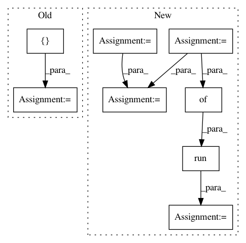

50914556832ada0004e55f004eed2b44f448cac6,train_fixed_dropout.py,,train,#,108
Before Change
validation_log, global_step=step)
// train accuracy
train_accuracy, summary_line = sess.run(
[accuracy, accuracy_summary],
feed_dict={keep_prob_: FIXED_KEEP_PROB})
train_log.add_summary(summary_line, global_step=step)
print("%s: train accuracy = %.3f" %
(datetime.now(), train_accuracy))
After Change
top_k_op = tf.nn.in_top_k(logits, labels, 1)
train_accuracy = tf.reduce_mean(tf.cast(top_k_op, tf.float32))
// General validation summary
accuracy_value_ = tf.placeholder(tf.float32, shape=())
accuracy_summary = tf.scalar_summary("accuracy", accuracy_value_)
train_summaries = tf.merge_summary(
tf.get_collection_ref("train_summaries"))
// Build an initialization operation to run below.
init = tf.initialize_all_variables()
// Start running operations on the Graph.
with tf.Session(config=tf.ConfigProto(
allow_soft_placement=True)) as sess:
sess.run(init)
// Start the queue runners.
tf.train.start_queue_runners(sess=sess)
train_log = tf.train.SummaryWriter(LOG_DIR + "/train", sess.graph)
validation_log = tf.train.SummaryWriter(LOG_DIR + "/validation",
sess.graph)
// Extract previous global step value
old_gs = sess.run(global_step)
// Restart from where we were
for step in range(old_gs, MAX_STEPS):
start_time = time.time()
_, loss_value, summary_lines = sess.run(
[train_op, loss, train_summaries],
feed_dict={keep_prob_: FIXED_KEEP_PROB})
duration = time.time() - start_time
assert not np.isnan(
loss_value), "Model diverged with loss = NaN"
// update logs every 10 iterations
if step % 10 == 0:
num_examples_per_step = BATCH_SIZE
examples_per_sec = num_examples_per_step / duration
sec_per_batch = float(duration)
format_str = ("{}: step {}, loss = {:.2f} "
"({:.1f} examples/sec; {:.3f} sec/batch)")
print(
format_str.format(datetime.now(), step, loss_value,
examples_per_sec, sec_per_batch))
// log train values
train_log.add_summary(summary_lines, global_step=step)
// Save the model checkpoint at the end of every epoch
// evaluate train and validation performance
if (step > 0 and
step % STEP_PER_EPOCH == 0) or (step + 1) == MAX_STEPS:
checkpoint_path = os.path.join(LOG_DIR, "model.ckpt")
saver.save(sess, checkpoint_path, global_step=step)
// validation accuracy
validation_accuracy_value = evaluate.get_validation_accuracy(
LOG_DIR)
summary_line = sess.run(accuracy_summary,
feed_dict={
accuracy_value_:
validation_accuracy_value
})
validation_log.add_summary(summary_line, global_step=step)
validation_log.flush()
// train accuracy
train_accuracy_value = sess.run(
train_accuracy, feed_dict={keep_prob_: 1.0})
summary_line = sess.run(
accuracy_summary,
feed_dict={accuracy_value_: train_accuracy_value})
train_log.add_summary(summary_line, global_step=step)
train_log.flush()
print(
"{}: train accuracy = {:.3f} validation accuracy = {:.3f}".
In pattern: SUPERPATTERN
Frequency: 3
Non-data size: 8
Instances
Project Name: galeone/dynamic-training-bench
Commit Name: 50914556832ada0004e55f004eed2b44f448cac6
Time: 2016-10-25
Author: nessuno@nerdz.eu
File Name: train_fixed_dropout.py
Class Name:
Method Name: train
Project Name: tensorflow/tensorboard
Commit Name: 17ba11f67dae7b1fba8d7fb6de65472d328847ff
Time: 2016-04-01
Author: danmane@gmail.com
File Name: scripts/generate_testdata.py
Class Name:
Method Name: WriteImageSeries
Project Name: pmorissette/bt
Commit Name: 197a7f917dfc540b59f6f1b5c397c89c05436eb9
Time: 2020-11-05
Author: pascal.i.tomecek@jpmorgan.com
File Name: tests/test_backtest.py
Class Name:
Method Name: test_Results_helper_functions_fi